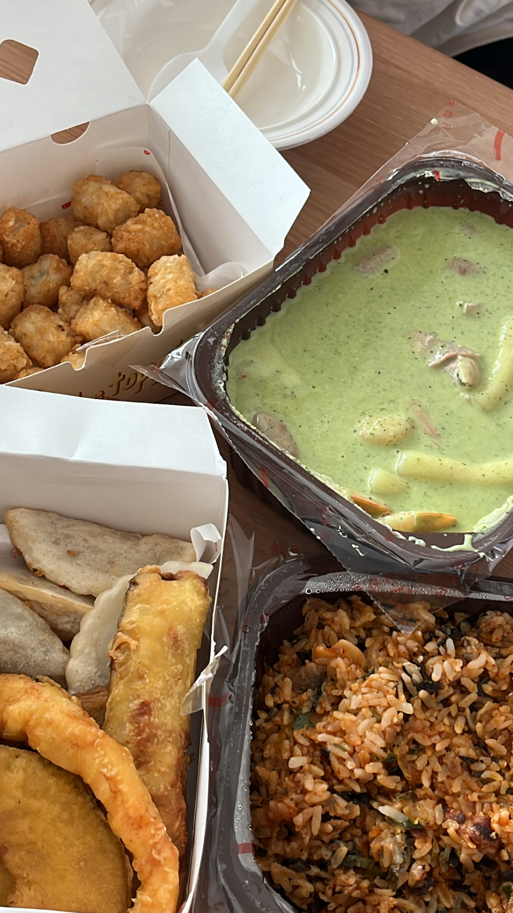

논리적인 실용주의자, 백과사전형 과묵하며 절제된 호기심으로 인생을 관찰하고, 상황을 파악하는 민감성과 도구를 다루는 뛰어난 능력이 있다. 말수가 적으며, 객관적이고 합리적으로 인생을 관찰하는 유형이다. 감각형(S) 중에서는 직관(N) 성향이 가장 강한 편이다. 필요 이상으로 자신을 발휘하지 않으며, 일과 관계되지 않는 이상 어떤 상황이나 인간관계에 직접 뛰어들지 않는다. 가능한 에너지 소비를 하지 않으려 하며, 사실적 자료를 정리, 조직하기를 좋아하는 경향이 있으며 인과관계나 객관적 원리에 관심이 많다. 3차 기능인 Ni(내향 직관)으로 눈치가 빠르며, 조용히 자기 일만 하고 있는 것처럼 보이지만 사실 주변 상황파악도 다 하고 있다. 4차기능은 Fe(외향 감정)로 사회성이 부족한 편이다. 자신의 경계선 안으로 들어온 사람에게는 장난이 많고 따뜻한 면이 있으나, 그렇지 않은 사람에게는 무관심으로 일관한다. 무표정으로 보이는 경우가 많고 냉소적이고 차가운 이미지로 비춰진다.
사회인격학 이론은 각 유형의 심리 기능의 위계만으로 관계를 분석한 이론이며, 검증되지 않은 내용이 포함되어 있으므로 해당 이론에 기반한 내용(특히 좋은 관계/나쁜 관계 등에 대한 서술)은 실제 인간관계에서는 적용하지 않는 것을 권장함.
이미 해당 이론 자체에 많은 논란이 있으며, 같은 성격 유형 내에서도 심리 기능의 위계는 천차만별이다. 이를 차치하더라도 어떠한 인간관계를 성격 유형만으로 점치는 행위는 관계에 대해 노력하지 않거나 시작도 하기 전에 포기하도록 만들 수 있으므로 주의하여야 함.
출처 : 나무위키

삼첩 분식 - 바질 크림 떡볶이
특징 1) 거부감 드는 비주얼
특징 2) 의외로 짱 맛있음